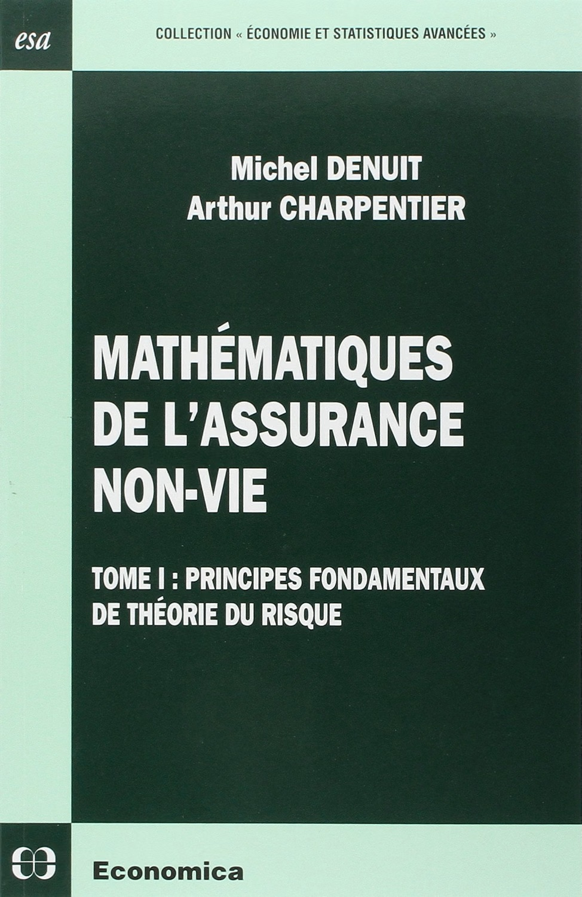
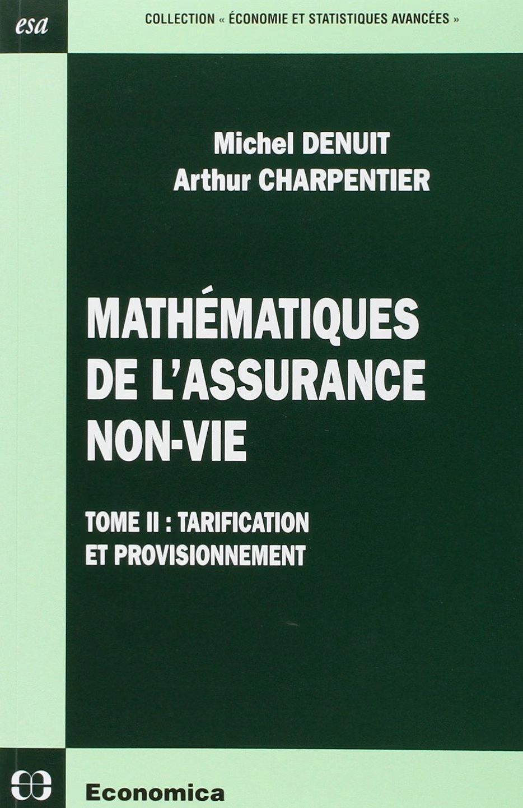
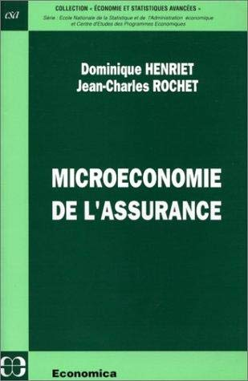

Reading
Six books worth dipping into (or reading cover to cover)
No single book covers the whole course. The list below is deliberately short: each title is particularly useful for one or more chapters, and together they provide a good route through most of the material.



Notes on the list
Denuit and Charpentier is the main reference for Chapters 3 to 6 of the course. Volume I, Principes fondamentaux de théorie du risque, covers premium principles, risk measures, stochastic orderings and dependence; Volume II, Tarification et provisionnement, covers generalised linear models, credibility, bonus–malus systems and reserving. The books are written in French and assume little beyond a solid grounding in probability, making them unusually approachable introductions to a technical literature.
Henriet and Rochet is the main reference for Chapter 2. It is short and precise, covering the supply of and demand for insurance, equilibrium under complete information, and then adverse selection and moral hazard. If you read one book alongside the lectures on contract design, make it this one.
Deelstra and Plantin is a concise volume covering premium calculation principles and the institutional reality of the reinsurance market. It is the English-language complement to Chapters 3 and 5 and is particularly useful because it does not separate the mathematics from the market it describes.
Eeckhoudt, Gollier and Schlesinger is a standard modern treatment of decision-making under risk. Read it for the foundations of Chapter 2, and because it connects insurance with the broader field of financial economics.
Borscheid and Haueter is an edited history of the global insurance industry from the late eighteenth century onwards, with chapters devoted to a wide range of countries. It provides useful background reading for Chapter 1. It is a long book, and you are certainly not expected to read it from cover to cover.